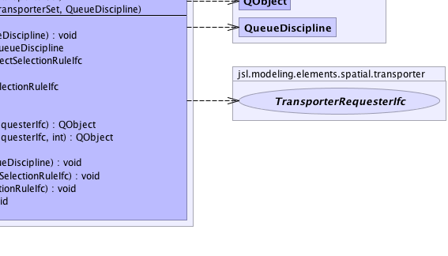

jsl.modeling.ModelElement
jsl.modeling.SchedulingElement
jsl.modeling.elements.spatial.transporter.TransporterProvider
jsl.modeling.ModelElement
jsl.modeling.SchedulingElement
jsl.modeling.elements.spatial.transporter.TransporterProvider
|
||||||||||
| PREV CLASS NEXT CLASS | FRAMES NO FRAMES | |||||||||
| SUMMARY: NESTED | FIELD | CONSTR | METHOD | DETAIL: FIELD | CONSTR | METHOD | |||||||||
java.lang.Object
public class TransporterProvider
|  |
| Nested Class Summary |
|---|
| Nested classes/interfaces inherited from class jsl.modeling.ModelElement |
|---|
ModelElement.TimedUpdateEventAction, ModelElement.WarmUpEventAction |
| Field Summary | |
|---|---|
static int |
DEFAULT_PRIORITY
|
protected Queue |
myDispatchQ
|
protected QObjectSelectionRuleIfc |
myInitialRequestSelectionRule
Can be used to supply a rule for how the requests are selected for allocation |
protected QObjectSelectionRuleIfc |
myRequestSelectionRule
Can be used to supply a rule for how the requests are selected for allocation |
protected TransporterSet |
myTransporterSet
|
| Constructor Summary | |
|---|---|
TransporterProvider(ModelElement parent)
Creates a TransporterProvider that uses a FIFO queue discipline. |
|
TransporterProvider(ModelElement parent,
java.lang.String name)
Creates a TransporterProvider that uses a FIFO queue discipline. |
|
TransporterProvider(ModelElement parent,
java.lang.String name,
TransporterSet set)
Creates a TransporterProvider that uses the supplied set and FIFO queue discipline |
|
TransporterProvider(ModelElement parent,
java.lang.String name,
TransporterSet set,
QueueDiscipline discipline)
Creates a TransporterProvider that uses the supplied set and queue discipline |
|
TransporterProvider(ModelElement parent,
TransporterSet set)
Creates a TransporterProvider that uses the supplied set and FIFO queue discipline |
|
TransporterProvider(ModelElement parent,
TransporterSet set,
QueueDiscipline discipline)
Creates a TransporterProvider that uses the supplied set and queue discipline |
|
| Method Summary | |
|---|---|
void |
cancelRequest(QObject request)
If the request is in the dispatch queue, this removes it. |
void |
changeDispatchQueueDiscipline(QueueDiscipline discipline)
This will change the queue discipline of the underlying Queue |
QueueDiscipline |
getDispatchQueueInitialDiscipline()
Returns the initial discipline for the queue |
QObjectSelectionRuleIfc |
getInitialRequestSelectionRule()
The rule to use when this provider is initialized |
int |
getNumberInDispatchQueue()
Returns the current number of requests in the dispatch queue |
QObjectSelectionRuleIfc |
getRequestSelectionRule()
Returns a reference to the request selection rule. |
TransporterSet |
getTransporterSet()
|
protected void |
initialize()
This method should be overridden by subclasses that need actions performed to initialize prior to a replication. |
QObject |
requestIdleTransporter(TransporterRequesterIfc requester)
This method provides a transporter to the requester. |
QObject |
requestIdleTransporter(TransporterRequesterIfc requester,
int priority)
This method provides a transporter to the requester. |
protected QObject |
selectNextRequest()
Selects a candidate request from the queue for allocation to one of the transportersunits. |
void |
setDispatchQueueInitialDiscipline(QueueDiscipline discipline)
Sets the initial queue discipline |
void |
setInitialRequestSelectionRule(QObjectSelectionRuleIfc rule)
The rule to use when this provider is initialized |
void |
setRequestSelectionRule(QObjectSelectionRuleIfc rule)
A request selection rule can be supplied to provide alternative behavior within the selectNextRequest() method. |
protected void |
setTransporterSet(TransporterSet set)
|
protected void |
transporterFreed()
|
| Methods inherited from class java.lang.Object |
|---|
clone, equals, finalize, getClass, hashCode, notify, notifyAll, wait, wait, wait |
| Field Detail |
|---|
public static final int DEFAULT_PRIORITY
protected TransporterSet myTransporterSet
protected Queue myDispatchQ
protected QObjectSelectionRuleIfc myInitialRequestSelectionRule
protected QObjectSelectionRuleIfc myRequestSelectionRule
| Constructor Detail |
|---|
public TransporterProvider(ModelElement parent)
parent -
public TransporterProvider(ModelElement parent,
java.lang.String name)
parent - name -
public TransporterProvider(ModelElement parent,
java.lang.String name,
TransporterSet set)
parent - name - set -
public TransporterProvider(ModelElement parent,
TransporterSet set)
parent - set -
public TransporterProvider(ModelElement parent,
TransporterSet set,
QueueDiscipline discipline)
parent - set - discipline -
public TransporterProvider(ModelElement parent,
java.lang.String name,
TransporterSet set,
QueueDiscipline discipline)
parent - name - set - discipline - | Method Detail |
|---|
public final TransporterSet getTransporterSet()
public final void changeDispatchQueueDiscipline(QueueDiscipline discipline)
discipline - public final QueueDiscipline getDispatchQueueInitialDiscipline()
public final void setDispatchQueueInitialDiscipline(QueueDiscipline discipline)
discipline - public final int getNumberInDispatchQueue()
public final void cancelRequest(QObject request)
request - Should not be nullpublic final QObject requestIdleTransporter(TransporterRequesterIfc requester)
requester - The requester for a transporter
public QObject requestIdleTransporter(TransporterRequesterIfc requester,
int priority)
requester - The requester for a transporterpriority, - The priority for the request
public final QObjectSelectionRuleIfc getRequestSelectionRule()
public final void setRequestSelectionRule(QObjectSelectionRuleIfc rule)
rule - public final QObjectSelectionRuleIfc getInitialRequestSelectionRule()
public final void setInitialRequestSelectionRule(QObjectSelectionRuleIfc rule)
protected QObject selectNextRequest()
protected void initialize()
ModelElement
initialize in class ModelElementprotected final void setTransporterSet(TransporterSet set)
protected void transporterFreed()
|
||||||||||
| PREV CLASS NEXT CLASS | FRAMES NO FRAMES | |||||||||
| SUMMARY: NESTED | FIELD | CONSTR | METHOD | DETAIL: FIELD | CONSTR | METHOD | |||||||||